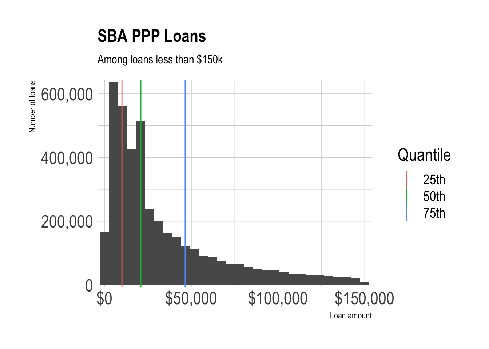
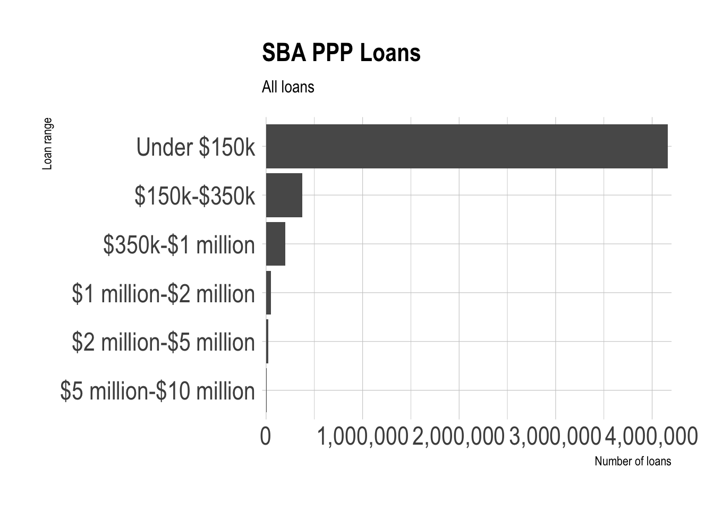
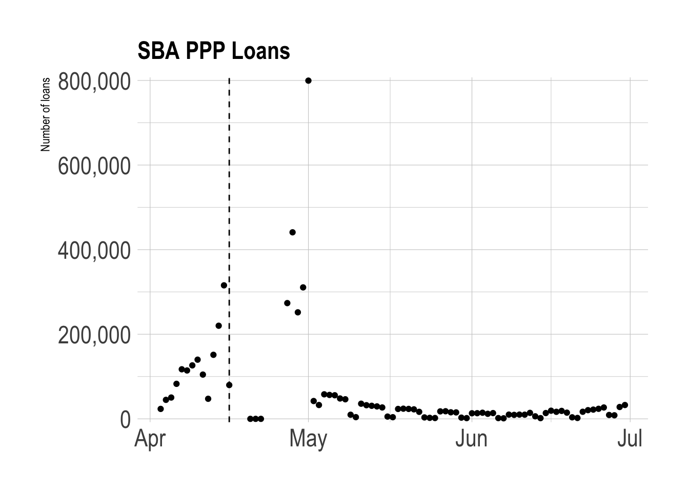
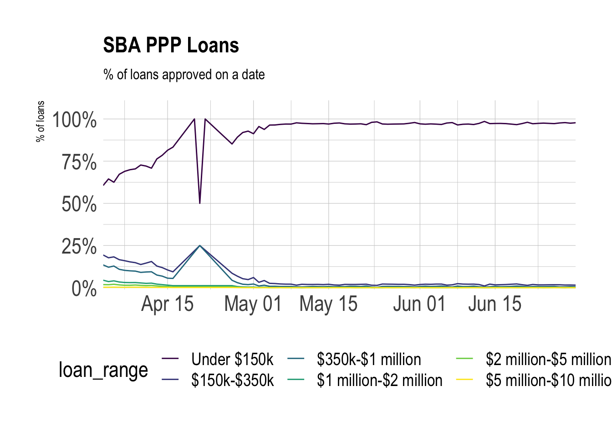
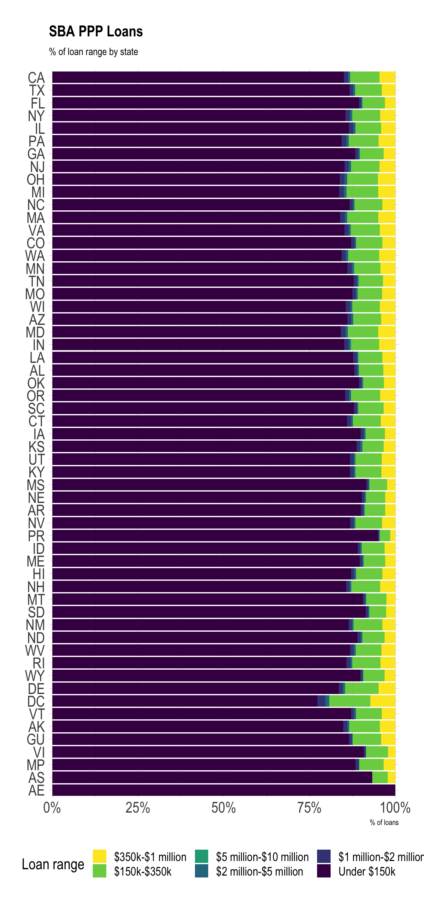
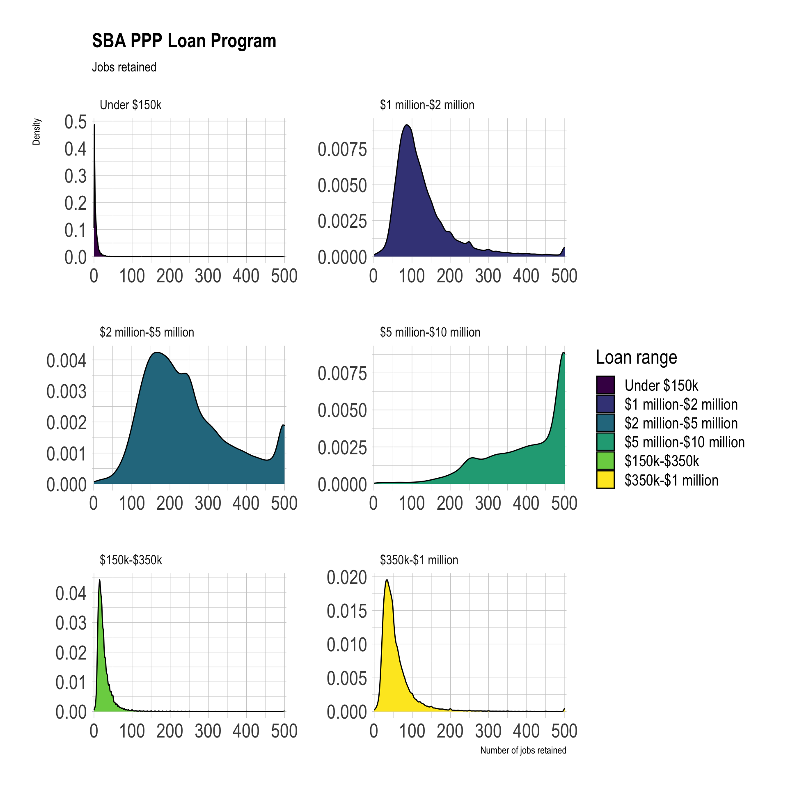
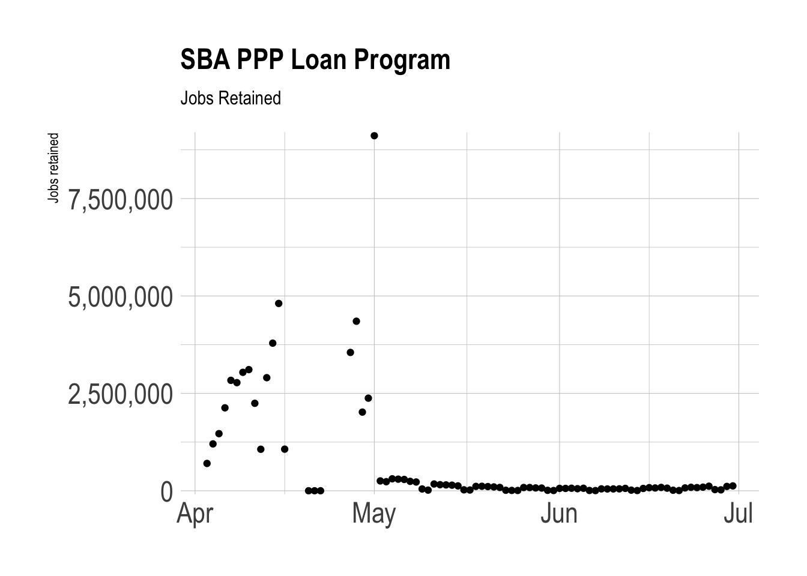
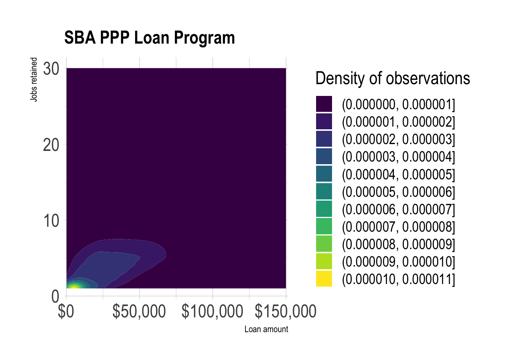
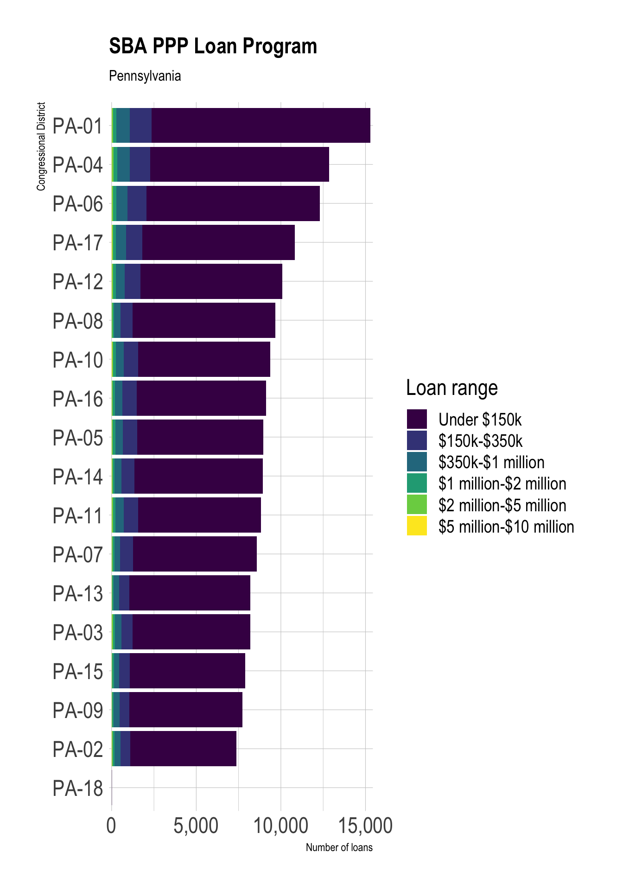
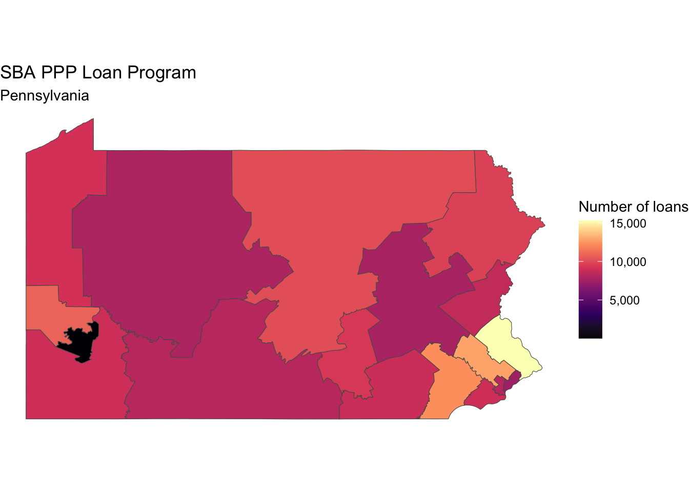

library(tidyverse)
library(vroom)
library(sf)
library(tigris)
library(lubridate)
library(janitor)
library(hrbrthemes)
library(scales)
theme_set(theme_ipsum(base_size = 18))
options(scipen = 999, digits = 4, tigris_use_cache = TRUE)In this post, I walk through the process of reading in the data from the Paycheck Protection Program, and show some basic analyses that can be done.
This post was migrated to Quarto in April 2024. The SBA significantly restructured how the data is structured between 2020-2024, so some of the older analyis is no longer applicable.
Load packages and set up environment:
Load and clean data
The data is available at this site: https://data.sba.gov/dataset/ppp-foia
The data exists in numerous CSV files, separated by state and sometimes loan amount.
This code chunk identifies all the CSV files in the folder, reads them in, and combines them.
path <- "posts/working-with-paycheck-protection-program-data-in-r/post_data/ppp"
#find all files in the folder that end in .csv
ppp_files <- list.files(path, full.names = TRUE, recursive = TRUE) %>%
keep(str_detect(., ".csv$")) %>%
#read each file with read_csv and combine them
set_names()
ppp_files |>
pluck(1) |>
read_csv(n_max = 100) |>
glimpse()
read_and_filter <- function(x){
print(x)
read_csv(x, col_types = cols(.default = "c")) |>
filter(mdy(DateApproved) < "2020-07-01") |>
clean_names()
}
ppp_data <- ppp_files |>
map(read_and_filter)
ppp_data |>
pluck(1)
glimpse(ppp_data)
list_rbind(ppp_data, names_to = "file_name") |>
write_csv("posts/working-with-paycheck-protection-program-data-in-r/post_data/combined_ppp.csv")ppp_combined <- vroom("post_data/combined_ppp.csv", delim = ",") %>%
mutate(date_approved = mdy(date_approved)) |>
mutate(loan_range = cut(current_approval_amount,
breaks = c(0, 150000, 350000, 1000000, 2000000, 5000000, 10000000),
labels = c("Under $150k", "$150k-$350k", "$350k-$1 million", "$1 million-$2 million", "$2 million-$5 million", "$5 million-$10 million"))) |>
separate(cd, into = c("state_2", "district"), remove = FALSE)This changes how the columns are interpreted, and separates the congressional district column into state and district. If the district value is blank, I replace it with NA.
There are cases where the value in the state column doesn’t match the state embedded in the congressional district cd column.
#preview data where state doesn't match congressional district
ppp_combined %>%
count(file_name, project_state, cd, state_2, sort = TRUE) %>%
mutate(flag_match = project_state == state_2) %>%
filter(flag_match == FALSE) %>%
slice(1:5)# A tibble: 5 × 6
file_name project_state cd state_2 n flag_match
<chr> <chr> <chr> <chr> <int> <lgl>
1 posts/working-with-paycheck-prot… MI MT-02 MT 18 FALSE
2 posts/working-with-paycheck-prot… MN MT-02 MT 15 FALSE
3 posts/working-with-paycheck-prot… NE SD- SD 4 FALSE
4 posts/working-with-paycheck-prot… NY NJ-05 NJ 4 FALSE
5 posts/working-with-paycheck-prot… TX NM-03 NM 3 FALSE There are only 423 rows where this occurs, and it is less than 1% of the dataset.
#summarize cases where mismatch occurs
ppp_combined %>%
mutate(flag_match = project_state == state_2) %>%
count(flag_match) %>%
mutate(pct_mismatch = n / sum(n),
pct_mismatch = round(pct_mismatch, 4)) %>%
filter(flag_match == FALSE) %>%
arrange(-pct_mismatch)# A tibble: 1 × 3
flag_match n pct_mismatch
<lgl> <int> <dbl>
1 FALSE 423 0.0001I filter out the rows where the state doesn’t match the congressional district.
ppp_combined |>
filter(project_state != state_2) |>
distinct(project_state, state_2)# A tibble: 236 × 2
project_state state_2
<chr> <chr>
1 AL WA
2 AL FL
3 AZ TX
4 CA ME
5 CA FL
6 CA AP
7 CT NJ
8 FL TX
9 FL WV
10 FL CA
# ℹ 226 more rowsppp_combined <- ppp_combined %>%
filter(project_state == state_2)This shows that there are some negative values in loan_amount. I filter out those values.
ppp_combined %>%
mutate(loan_type = current_approval_amount > 0) %>%
count(loan_type)# A tibble: 2 × 2
loan_type n
<lgl> <int>
1 FALSE 1
2 TRUE 4811540ppp_combined <- ppp_combined %>%
filter(current_approval_amount > 0, !is.na(current_approval_amount))Analysis
Loan amount
The first step is to split the data into 2 buckets. For loans above $150k, the SBA binned the loan amount instead of reporting the actual value.
ppp_under_150 <- ppp_combined %>%
filter(!str_detect(file_name, "150k_plus"))
ppp_over_150 <- ppp_combined %>%
filter(str_detect(file_name, "150k_plus"))Among loans less than 150k, most are less than 21k, and the distribution is very heavily skewed to the right.
quantiles <- ppp_under_150 %>%
reframe(quantiles = quantile(current_approval_amount, probs = c(.25, .50, .75)),
probability = c("25th", "50th", "75th")) %>%
mutate(probability = as.factor(probability))
ppp_under_150 %>%
ggplot(aes(current_approval_amount)) +
geom_histogram() +
geom_vline(data = quantiles, aes(xintercept = quantiles, color = probability)) +
scale_y_comma() +
scale_x_comma(labels = scales::dollar) +
labs(title = "SBA PPP Loans",
subtitle = "Among loans less than $150k",
x = "Loan amount",
y = "Number of loans",
color = "Quantile")
Loans under $150k make up the vast majority of all PPP loans.
ppp_combined |>
count(loan_range) %>%
mutate(loan_range = fct_reorder(loan_range, n)) %>%
ggplot(aes(n, loan_range)) +
geom_col() +
labs(title = "SBA PPP Loans",
subtitle = "All loans",
x = "Number of loans",
y = "Loan range") +
scale_x_comma()
Loan approvals peaked in late April 2020 when the program began accepting applications for the second round, and picked up in July. There is extreme weekday-weekend seasonality in the data after April. The “U” shape from May to July generally coincides with the effort to “reopen” economies nationwide.
ppp_combined %>%
count(date_approved) %>%
ggplot(aes(date_approved, n)) +
geom_point() +
geom_vline(xintercept = ymd("2020-04-16"), linetype = 2) +
labs(title = "SBA PPP Loans",
x = NULL,
y = "Number of loans") +
scale_y_comma()
This shows that bigger loans tended to be approved earlier in the program, which was a major criticism.
ppp_combined %>%
count(date_approved, loan_range) %>%
mutate(loan_range = fct_reorder(loan_range, n) %>% fct_rev) %>%
group_by(date_approved) %>%
mutate(pct_of_loans = n / sum(n)) %>%
ungroup() %>%
ggplot(aes(date_approved, pct_of_loans, color = loan_range)) +
geom_line() +
scale_x_date(expand = c(0,0)) +
scale_y_percent(limits = c(0,1.1)) +
scale_color_viridis_d() +
labs(title = "SBA PPP Loans",
subtitle = "% of loans approved on a date",
x = NULL,
y = "% of loans",
fill = "Loan range") +
theme(legend.position = "bottom")
Most states received similar proportions of small and large loans. Territories received more small loans and fewer large loans.
ppp_combined %>%
mutate(loan_range = fct_inorder(loan_range)) %>%
count(project_state, loan_range) %>%
group_by(project_state) %>%
mutate(pct_of_loans = n / sum(n)) %>%
ungroup() %>%
filter(!is.na(project_state)) %>%
mutate(project_state = fct_reorder(project_state, n, .fun = sum)) %>%
ggplot(aes(pct_of_loans, project_state, fill = loan_range)) +
geom_col() +
scale_fill_viridis_d(direction = -1) +
scale_x_percent() +
labs(title = "SBA PPP Loans",
subtitle = "% of loan range by state",
x = "% of loans",
y = NULL,
fill = "Loan range") +
theme(legend.position = "bottom")
Jobs
Bigger loans tended to retain more jobs.
ppp_combined %>%
filter(!is.na(jobs_reported)) %>%
mutate(loan_range = fct_inorder(loan_range) %>% fct_rev()) %>%
ggplot(aes(jobs_reported, fill = loan_range)) +
#geom_histogram(bins = 200) +
geom_density() +
facet_wrap(~loan_range, ncol = 2, scales = "free") +
scale_x_comma() +
#scale_y_comma() +
scale_fill_viridis_d() +
labs(title = "SBA PPP Loan Program",
subtitle = "Jobs retained",
x = "Number of jobs retained",
y = "Density",
fill = "Loan range")
The timeline of jobs_reported closely matches the trend of when loans were approved.
ppp_combined %>%
filter(!is.na(jobs_reported)) %>%
group_by(date_approved) %>%
summarize(jobs_reported = sum(jobs_reported)) %>%
ungroup() %>%
ggplot(aes(date_approved, jobs_reported)) +
geom_point() +
scale_y_comma() +
labs(title = "SBA PPP Loan Program",
subtitle = "Jobs Retained",
x = NULL,
y = "Jobs retained")
Among loans less than 150k and where the data was reported, the median loan retained 7 jobs per 50k spent. Systemic reporting bias probably makes this number less reliable.
ppp_combined %>%
filter(loan_range == "Under $150k",
!is.na(jobs_reported),
!is.na(current_approval_amount)) %>%
select(jobs_reported, current_approval_amount) %>%
mutate(jobs_retained_per_50k = (jobs_reported / current_approval_amount) * 50000) %>%
summarize(jobs_retained_per_50k = median(jobs_retained_per_50k))# A tibble: 1 × 1
jobs_retained_per_50k
<dbl>
1 7.11In the same loan range, bigger loans generally meant more jobs retained.
test <- ppp_combined %>%
filter(loan_range == "Under $150k") %>%
count(current_approval_amount, jobs_reported, sort = TRUE) %>%
slice(1:5000)
test %>%
ggplot(aes(current_approval_amount, jobs_reported)) +
geom_density_2d_filled() +
scale_x_comma(labels = scales::dollar) +
labs(title = "SBA PPP Loan Program",
subtitle = NULL,
x = "Loan amount",
y = "Jobs retained",
fill = "Density of observations")
Mapping the data
The dataset identifies which federal congressional district the applicant is from. I use tigris to retrieve the shapefiles for the most recent districts.
congress_districts <- suppressMessages(congressional_districts(cb = TRUE, resolution = "500k", year = 2020)) %>%
st_as_sf() %>%
clean_names() %>%
filter(statefp == 42)This counts how many of each loan_range a district received. Note that there are missing values and what appear to be defunct district IDs in the district column.
ppp_pa_districts_loan_range <- ppp_combined %>%
filter(project_state == "PA") %>%
count(cd, loan_range, sort = TRUE)
ppp_pa_districts_loan_range %>%
mutate(cd = fct_explicit_na(cd),
cd = fct_reorder(cd, n, .fun = sum)) %>%
ggplot(aes(n, cd, fill = loan_range)) +
geom_col() +
scale_x_comma() +
scale_fill_viridis_d() +
labs(title = "SBA PPP Loan Program",
subtitle = "Pennsylvania",
x = "Number of loans",
y = "Congressional District",
fill = "Loan range")
Districts in eastern Pennsylvania near Philadelphia received more loans from the program.
ppp_pa_districts <- ppp_combined %>%
filter(project_state == "PA") %>%
count(district, sort = TRUE)
congress_districts %>%
right_join(ppp_pa_districts, by = c("cd116fp" = "district")) %>%
ggplot() +
geom_sf(aes(fill = n)) +
scale_fill_viridis_c(option = "A", labels = scales::comma) +
labs(title = "SBA PPP Loan Program",
subtitle = "Pennsylvania",
fill = "Number of loans") +
theme_void()